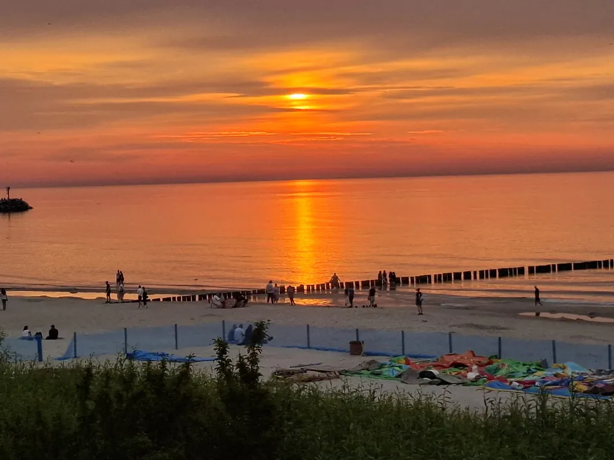
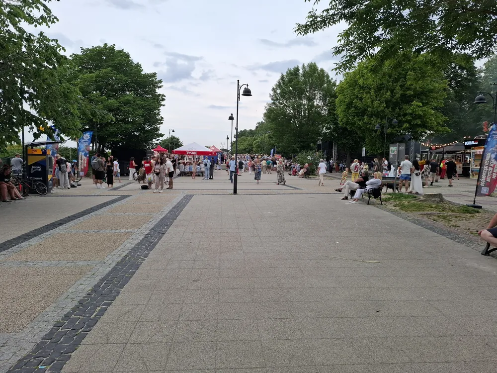

Plaża
Szeroka, piaszczysta plaża zaczyna się około 200 metrów od apartamentów. Po zachodniej stronie miasta jest spokojniej i więcej miejsca dla szukających ciszy.

Ustka pachnie wakacjami, słońcem, plażą i sosnowym lasem. Przyjeżdża się tu, żeby odpocząć od codziennego pośpiechu.
Ustka to małe kąpielisko na środkowym wybrzeżu, położone u ujścia rzeki Słupi, 18 km na północ od Słupska i około 150 km na zachód od Gdańska.
Szukają Państwo spokoju i ciszy, rozrywki, a może aktywnego wypoczynku? W Ustce każdy znajdzie coś dla siebie. Miasto ma też swoją historię: mało znaną, skomplikowaną, ale bardzo ciekawą, dlatego warto je odkryć na spokojnym spacerze.
Apartamenty stoją w najpiękniejszej dzielnicy Ustki, wśród zabytkowych przedwojennych kamienic. Do plaży jest około 200 metrów, do głównej promenady równie blisko, a wieczorem wraca się do cichej okolicy.
Obiekt jest otwarty przez cały rok, więc Ustkę można poznać także poza sezonem, gdy plaże są puste, a ceny niższe.
Wszystko na spacer, bez samochodu.
Szeroka, piaszczysta plaża zaczyna się około 200 metrów od apartamentów. Po zachodniej stronie miasta jest spokojniej i więcej miejsca dla szukających ciszy.

Nadmorska promenada z kawiarniami i lodziarniami to miejsce na wieczorny spacer. Od apartamentów dzieli ją kilka minut drogi.

Ceglana latarnia morska stoi przy porcie u ujścia Słupi. Stąd widać wejście do portu i statki wypływające w rejsy po Bałtyku.
Zdjęcie na górze strony: fot. Kawon Kez Sel, Wikimedia Commons, CC0.
Siedem apartamentów 200 m od plaży, otwartych przez cały rok.